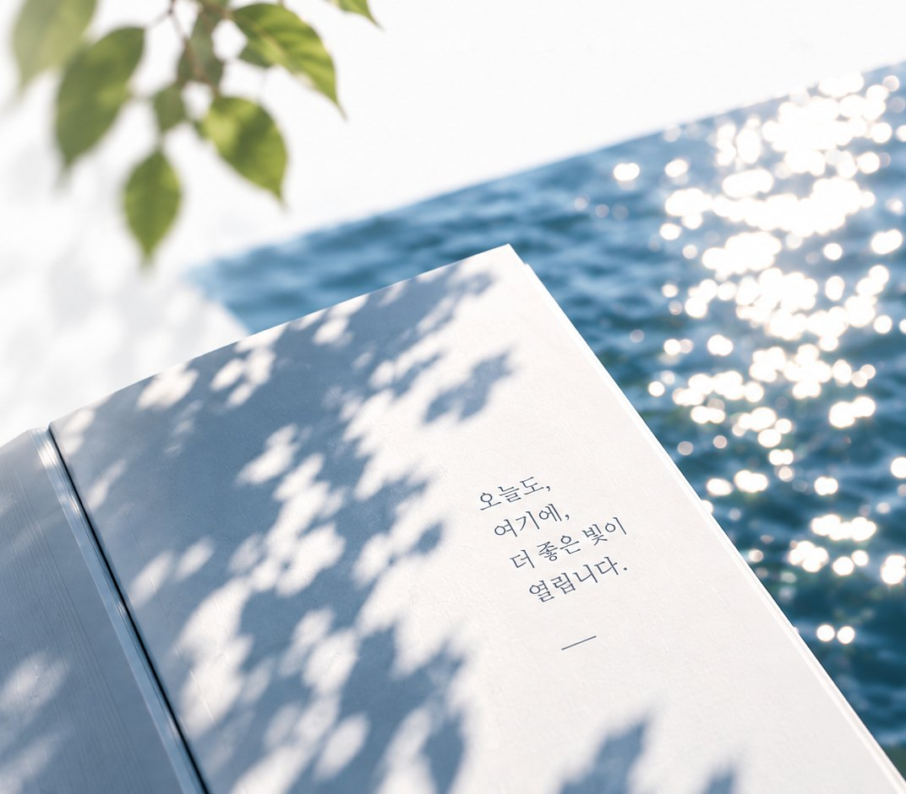
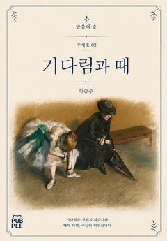
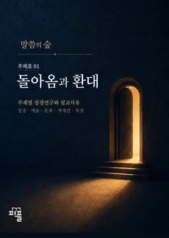
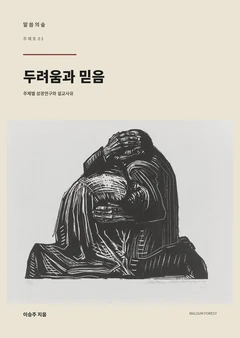

OPEN PAGE 09
투명의 호수
《투명의 호수》 · 서문과 책의 제목이 된 마지막 글
투명의 호수에 마음을 비추면
함께 숨쉬며 다시 생기를 얻는다

Open Pages
책의 표지를 다시 보여 주기보다, 그 안에서 시작된 생각과 질문을 한 페이지씩 꺼내 놓습니다.
OPEN PAGE 09
《투명의 호수》 · 서문과 책의 제목이 된 마지막 글
투명의 호수에 마음을 비추면
함께 숨쉬며 다시 생기를 얻는다
Books
한 편의 글이 한 권의 책으로 이어집니다. 성경 본문을 깊이 읽는 주제호와, 삶의 장면을 오래 바라본 에세이를 펴냅니다.



약함과 은혜말씀의 숲 주제호 04 · 제작 중
Series
말씀의 숲이라는 하나의 세계 안에서, 독자가 서로 다른 방식으로 말씀과 삶을 탐색하는 다섯 개의 산책 경로를 제시합니다.
Visual Meditation
사진은 장식이 아니라 읽기의 호흡입니다. 색과 타이포그래피, 여백과 장면이 함께 책의 세계를 이어갑니다.
다음 장면으로 →01 / 05About
삶의 본질과 의미를 담아
미쁘고 아름다운 책을 만듭니다.
미쁘고 아름다운 책으로,처음으로 돌아가기 →
말씀과 삶 사이에 오래 머무는 시간.
읽고 난 뒤에도
한 문장과 한 장면이
삶에 오래 남도록.